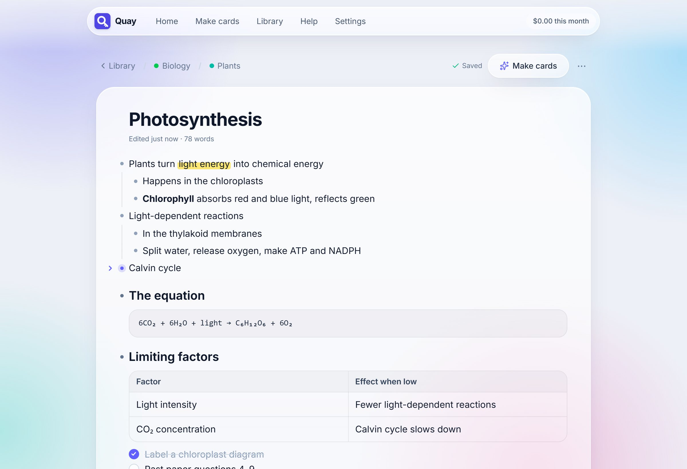
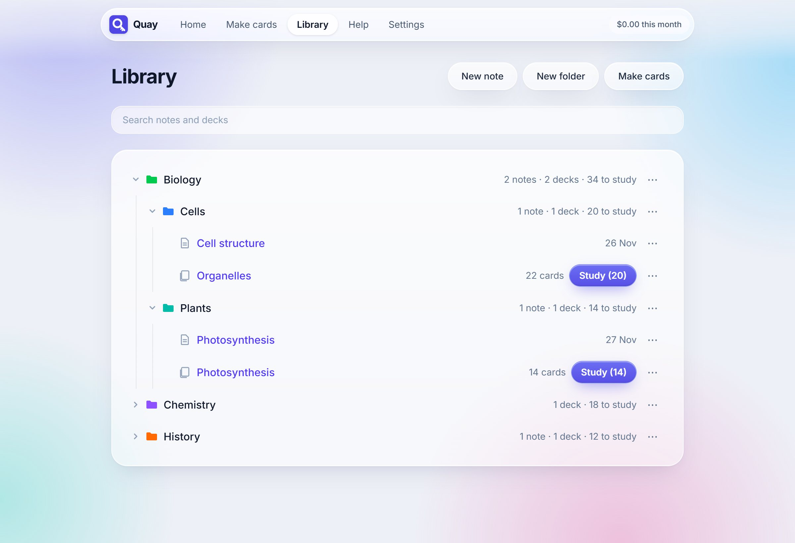
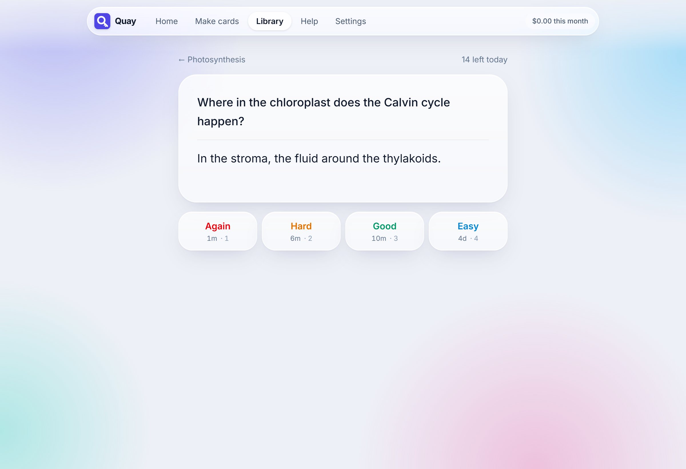
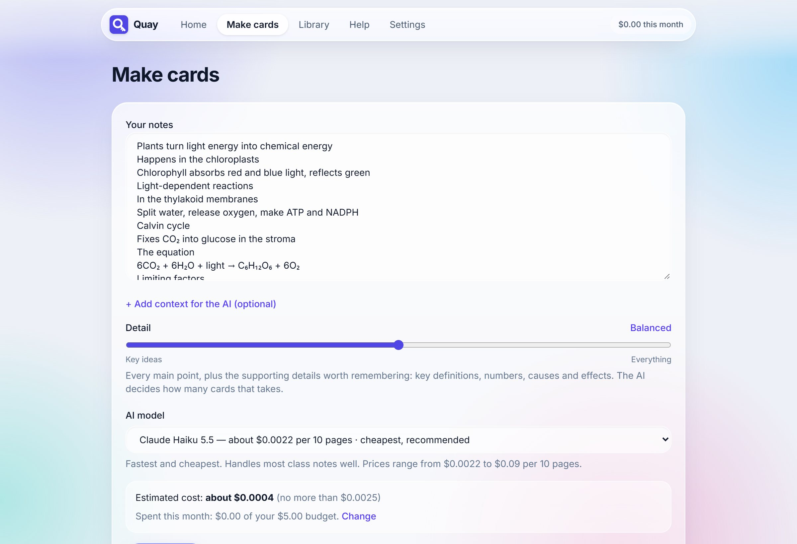

Outline notes, like RemNote
Every line is a bullet. Tab to indent, collapse sections, drag lines by their bullet, click one to zoom in. Headings, checklists, tables and highlights format as you type.
Free · Open source · No subscription
Write outline notes, turn them into flashcards with your own AI account, and study with spaced repetition. You pay the AI company directly for what you use: usually a few cents a week.
Windows 10 and 11 · macOS coming later · Free, AGPL-3.0

Other study apps resell the same AI with a markup and cap how much you can use. Quay connects to your own AI account instead, so you pay the AI company's own price. Like paying for the petrol your taxi ride uses, instead of the whole taxi fare.
Quay's range assumes 10 to 120 sets of notes a month for 9 study months, on the cheapest model of each AI company it supports (prices checked November 2026). Quay shows the cost before every request and stops at the monthly budget you set.
Every line is a bullet. Tab to indent, collapse sections, drag lines by their bullet, click one to zoom in. Headings, checklists, tables and highlights format as you type.
Paste a chapter or open a note and choose how much detail you want. The AI decides how many cards that takes, and you check every card before it's saved.
Again, Hard, Good, Easy, each showing when the card comes back. Set a test date and every card comes up before it, or cram the whole deck the night before.
Nested, colour-coded folders for notes and decks, with search across everything and drag-and-drop to reorganise.
Claude, ChatGPT or Gemini. Pick a model from a list that shows what each costs, from the cheapest up, and set a monthly budget Quay won't go over.
No account, no Quay server. Your notes and your AI key stay on your computer; the key is only ever sent straight to the AI company.



Quay is a desktop app, so your library lives safely on your computer, not in a browser that might clear it.
Quay walks you through it: make an account with an AI company, add a few dollars of credit, set a spending limit, paste your key.
Take notes or paste your class notes, make cards in one click, and study the ones due each day.
Yes. Quay is open source and costs nothing. The only cost is the AI you use through your own account, which you pay to the AI company directly, at their price. Writing notes and studying cost nothing at all.
Quay doesn't run its own AI. Study apps with AI features use the same AI companies and add a markup, plus usage limits. With Quay there's no middleman: you get the AI company's price and no cap except the budget you choose.
Making cards from 10 pages of notes usually costs well under a cent on the cheapest models. Quay shows the estimated cost before every request, asks again for anything large, and stops at your monthly budget.
Your key is stored only on your computer and only ever sent to the AI company. There's no Quay account or server, so there's nothing for anyone to leak. We also recommend setting a spending limit in your AI account.
For now, yes. Quay's installer isn't code-signed yet (we're applying to a free signing programme for open-source projects), so Windows doesn't recognise the publisher. Click More info, then Run anyway. You can check the source code on GitHub.
A macOS version is planned, then a web version you can use in a browser. Windows comes first.
On your computer, inside Quay's own app folder. Nothing is uploaded anywhere except the text you choose to send to your AI company when making cards.